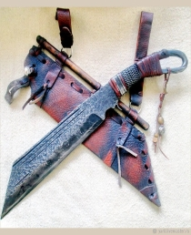

Сакс Локи
Материалы: дамаск, Рог оленя, рог лося, кожа, латунь, медь, натуральная кожа
Размер: 300х32х6-3 мм
Цена: 40 000 руб.
Короткий меч древних норвежцев. Согласно некоторым точкам зрения, название народа «саксы» произошло именно от названия этого меча. Использовались в Европе, находили применение и на Руси. В ряде европейских государств в период раннего Средневековья конкурировал с мечами. На территории Руси найдено 10-12 скрамасаксов, все они датируются X веком. Часто саксами назывались ножи длиною более 30 см и, как правило, имевшие богато украшенные ножны.